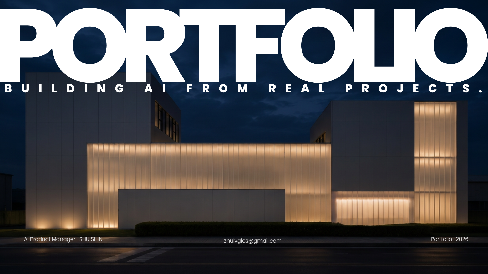
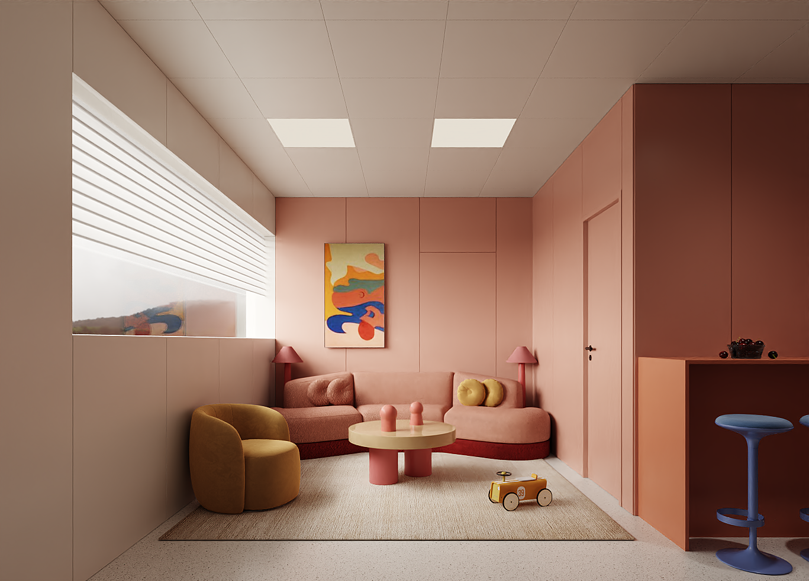
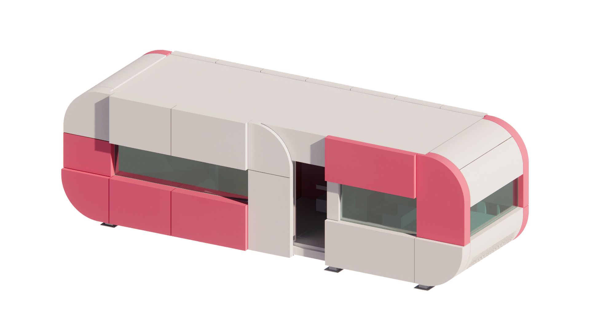
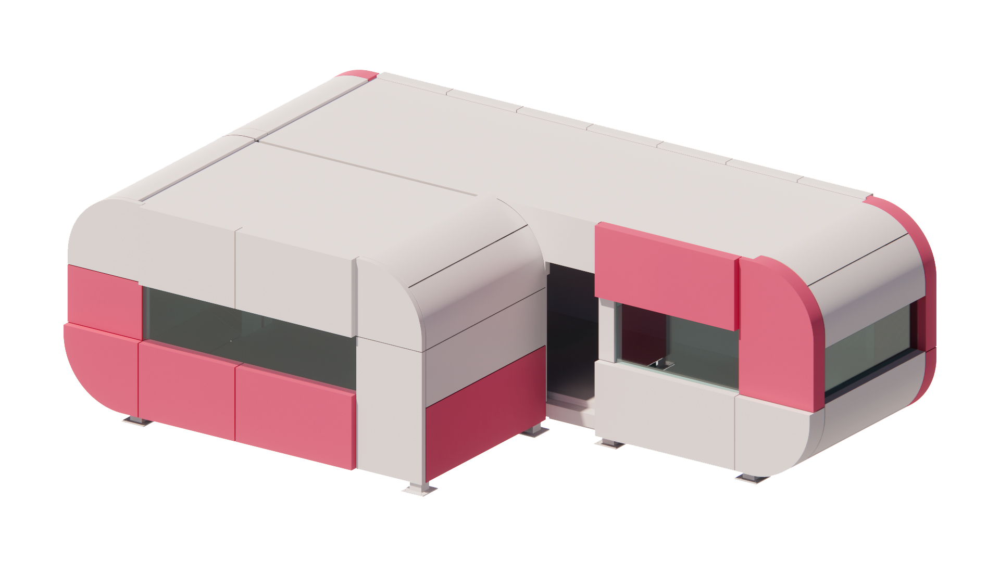

- 扩建目标：新增客房 / 提升接待能力
- 场地条件：面积、位置、施工限制
- 运营偏好：自助入住、低人力维护、智能控制
AI PM Portfolio Static Design Draft
Positioning
01 / 22

AGENT WORKFLOW
我把民宿扩建需求，设计成一条可解释的 Agent 工作流。
这不是把 LLM 当万能生成器，而是把真实项目经验拆成可解释规则：每一步都有输入依据、判断逻辑和交付边界。
- 提取面积、客群、风格、预算层级
- 判断 38㎡ + 6㎡ 扩建的约束边界
- 识别无人化运营、智能化、交付周期等关键词
- 推荐 Capsule Cabin S / M
- 生成卧室、卫浴、休闲区、收纳等空间模块
- 输出室内配置与基础智能设备建议
- 生成 7 个交付阶段
- 为每阶段生成任务、验收点、负责人视角
- 标记现场风险：运输、吊装、水电、防水、调试
- 预算与周期仅做示例区间
- 不替代正式设计、报价、施工组织
- 保留人工确认、专业复核和版本迭代入口
DEMO EVIDENCE
Demo 不是展示页面，而是把产品判断做成可操作体验。
PoC 方案成果：动态推荐页 —— 验证 AI Agent 是否能给出结构化、可信的推荐方案，并支持业务快速决策。
PoC 方案成果 / 动态推荐页
推荐方案：38m² 单体配置
主线展示当前推荐方案，同时保留 38m² / 56m² 的决策对比。Recommendation
Capsule Cabin S / 38m² 单体
输入筛选条件，当前最优方案，优先匹配 38m² 单体产品。
38m²建筑面积
Cabin S产品型号
低交付复杂度
✓ 优先推荐方案：匹配度高、结构合理性好
1-4人 / 标准房 / 自助入住

Decision Logic
38m² / 56m² 决策对比

推荐约束
- 空间利用率高
- 成本最优
- 适合短期高频周转

候选
- 空间更宽敞
- 适合家庭 / 长住
- 造价更高
OUTPUT ARCHITECTURE
???????????? AI ????????
Agent ????????????????????????????????????????
?????????
?????????
??????
???????
?????????
?????????
?????????
?????????
????????
???????
??????Configuration JSON?
?? AIChat.vue / createRuleBasedConfiguration ????????
01 const createRuleBasedConfiguration = (message) => {
02 const isFamily = shouldUseFamilyProduct(message)
03 return {
04 request_id: "REQ-20240615-001",
05 project_type: "holiday_homestay",
06 input: { area: 38, guests: 4 },
07 product_system: "Capsule Cabin",
08 recommended_product: "Capsule Cabin S",
09 recommended_area_sqm: 38,
10 target_guests: "1-4? / ????",
11 operation_mode: "???? + ????",
12 space_modules: ["???", "??", "???"],
13 smart_devices: ["????", "??", "??"],
14 recommendation_basis: rules,
15 delivery_phases: createRuleBasedDelivery(plan)
16 }
17 }
?????????????
?????????????
??????????????
?????????????
?????????????
??? UI ????? Demo ???
{ "primary_product": "Capsule Cabin S", "area": 38, "guests": 4 }{ "smart_devices": [{"type":"access_control","level":"L2"}] }{ "delivery_plan": { "phases": 7, "current_phase": 3, "eta_days": 28 } }???
????
???
94%
94%
Capsule Cabin S / 38m?
6??????????? L2
? ?????????
? ??????
? ????????
? ??????
???? ?? 3 / 7
???? 28?????? 2024-06-15
VALUE & IMPACT
这个 PoC 验证的不是模型能力，
而是从需求到交付的产品闭环和可复制价值。
将建筑与装配式领域的经验沉淀为规则，让 Agent 连接需求与交付，提升效率与标准化水平。
BEFORE 传统流程（人工驱动，沟通成本高）
🤖
AGENT
AFTER 智能管家（Agent 驱动，效率更高，标准化可复制）
核心价值（Value Highlights）
已建项目经验
产品规格库
施工与交付规则
行业知识与最佳实践
规则引擎
Agent 智能管家
产品与交付价值
让专业经验结构化，让 AI 辅助专业决策，让产品配置与交付更高效、更可靠、更可复制。